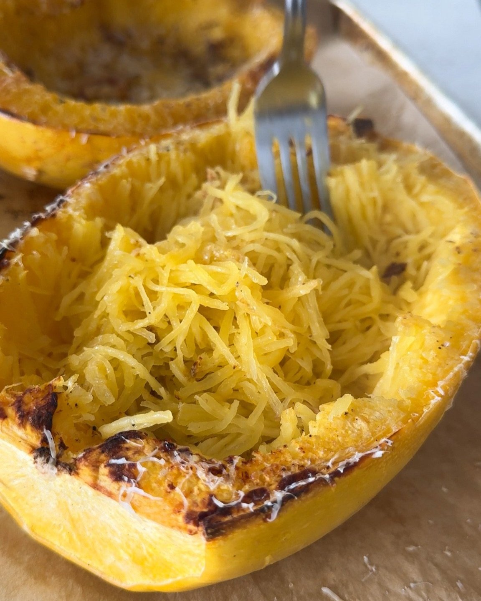
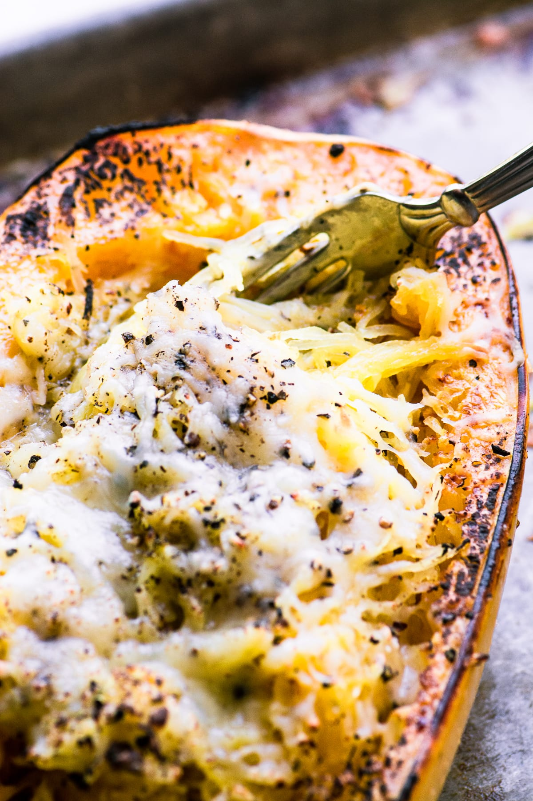

Cacio e Pepe Spaghetti Squash

HOW DO YOU MAKE THIS SPAGHETTI SQUASH?
- First, you’re going to cut your spaghetti squash in half lengthwise. *Tip: if your squash is hard to cut, microwave it for about 2-3 minutes to soften it up. Scoop out the seeds and the inner webbing, leaving a well in the center of each squash.
- Drizzle a bit of olive oil over both halves, and a sprinkle of salt and pepper. Place a few cloves of garlic on a baking sheet and turn both squashes upside down to cover the garlic. *This will steam the garlic, which you’ll add back to the squash later!
- Now, let’s make the filling for our galette. Spread the soft cheese onto the rolled out pie dough, leaving a 2" space around the edges. Top the cheese with the tomatoes and zucchini slices, overlapping them slightly as needed.
- Remove the squash from the oven, and use a fork to lightly shred the insides of the squash to get that spaghetti texture. Top with extra cheese, cracked pepper, basil, and ricotta, if desired.

INGREDIENTS
- Pie crust
- Spaghetti squash
- olive oil
- garlic
- basil
- Pecorino romano
- Ricotta (optional)

HOW LONG DOES THIS TAKE TO MAKE?
There are three steps to making this cacio e pepe spaghetti squash at home:
- Prepare the squash, which is about 10 minutes
- Roast the squash, which takes about 45 minutes
In total, this recipe will take under an hour to make.